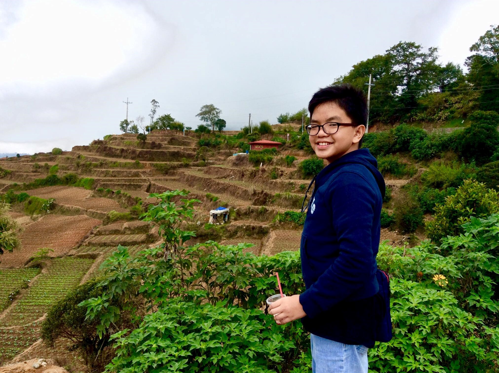
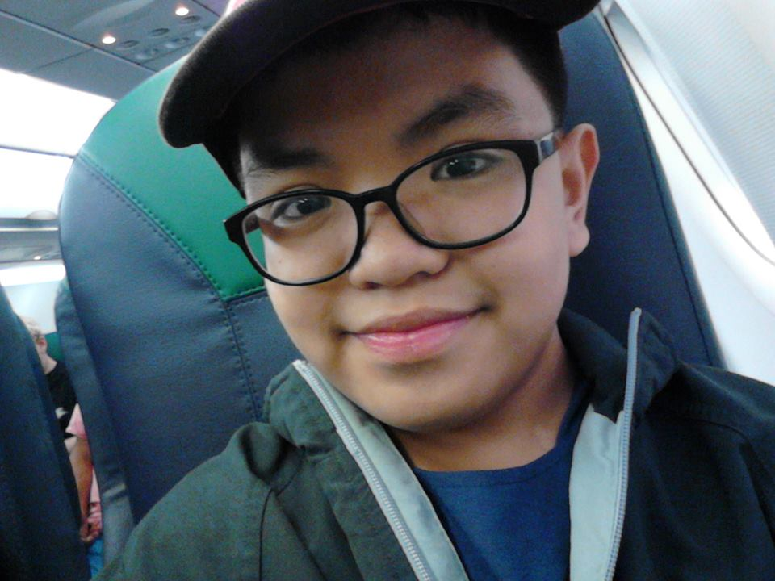
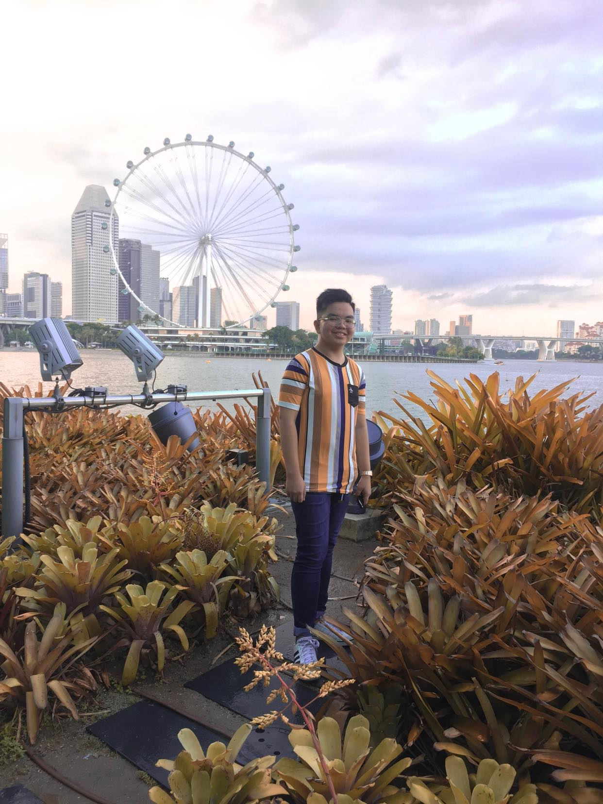
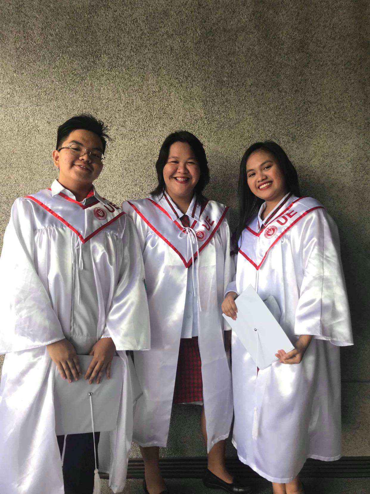

My name is Rheniel Jacob M. Belecina.1 I was born in April 27, 2002.2 My mother is Sheila Belecina.3 My father is Rene Belecina.4 I live at Quezon City.5 During my childhood years, I always spend my time playing outdoor games together with my cousins.6  We always play piko, hide and seek, sepak and many more.7 Those years, I just only want to play and see my life as colorful as the sky.8 Additionally, I always watched cartoons every afternoon in GMA.9 I’m always waiting in Doraemon, Voltes V and Slumdank.10 Those are my favorite cartoons those time.11 I remembered that I’m watching it together with my cousins and friends while eating pancit canton with egg.12 I also studying in a nearby school.13 I studied at P. Burgos Elementary School.14 I am very proud at myself that time because at young age I am achieving many medals in school.15 I joined on MTAP contest and compete with other schools and we always won.16 I became Accelerated that time were from Grade 3 I became Grade 5.17  I met my good friends in that section were I treated as a family because together with them we played after class we are together when we have fieldtrip and many more.18 I graduated with no honors but I’m proud to myself because I did my best to study.19 My parents celebrate my achievements that time and they invited all my friends and relatives because they are proud of me.20
Go Top
After I graduated elementary at young age, I studied on V. Mapa High School where I have my adolescence phase.1 This is the most unforgettable years because I tried the things that I really don’t know that I can.2 This is the years I’ve met the people who I trusted the most and became the best people that become my endgame.3 Because I’m on the special section, my classmates from grade 7 to Grade 10 is the same people, so our bonds become stronger and compacted.4 They are the one who became my family because we help each other not only when there is crisis but also when we needed it.5 I really enjoyed my teenage years because even I’m stress in life, I’m not affected by it because I’ve got a squad that understands me.6 We always participate on different contest held on schools in order to enhance our skills and enjoyed it.7 I also given a chance to compete on Thailand for a research conference and I’m really never forget those days.8 I’m with the principal of our school in the same room and I’m really comfortable with her that time.9  I graduated with honors when I was in Junior high school.10 And when I entered Senior High School, challenges become more hard but because I met the two people that become close to me and to my family so it become easy.11 I studied my SHS on University of the East.12 My strand back then is STEM.13 I remembered these days because this is the years were I experienced to face the reality.14 I remembered that we needed to go to Adamson every day for our research and to test the variable that we are using.15 We also need to arrange our papers and credentials for our enrollment in college and those entire things are needed to balance all.16 I’m really happy because even though we have the things to do, we managed to distress and be happy at the same time.17 We managed to went to Binagonan and swam there and meet the family of one of my best friend.18
Before the day and after our graduation, I have given a chance to travel on Singapore, Malaysia and South Korea. 1 It was a dream come true to see and feel the places that I only see on the series and k dramas that I watched.2 I also visited my old friend there because she live there and she was our tour guide on Singapore. 3 That was the most unforgettable travels together with my family on 2019 before this pandemic.4 We stayed for one week on Singapore and another one week on South Korea. 5 2019 is really a great year for me because much of my classmates is close to me and they are so kind and one call away even today.6
Go Top


I started my college on University of the East.1 I took the course BSIT together with my best friend.2 At first, I’m really nervous because I don’t have any background in this course because of the strand I takeback then.3 I also feel the pressure taking up this course because it can affect my future.4 However, I felt the full support of my family on my path; I don’t heard any bad comments or negative thought despite of my hesitation.5 During my first year for being a college student, I really enjoyed it together with my friends because I started to learn how to make codes and learn deeper on IT field.6 I also tried new things that I don’t know that I can like playing billiards and playing online games.7 But even though I can still managed my time and be balanced so I can passed my subjects.8 I also become more aware on the reality we had, what government we have and the society we had.9 Unfortunately, college should be the best but it become worst because of the pandemic.10 We started to conduct classes online and we always all become tired because of this situation.11 I accept the fact that I can’t no longer talk to my seatmate when there is class or ask to them when there is a lesson I can’t understand.12 And sadly, few of my friend stopped their studies because of financial problems.13 On the other hand, these past few months I’m using my time to improve my character as a person because this pandemic gives me a chance to know myself more and be a better student.14 During pandemic, I used the time to reconnect to my old friend be closer to God and my family and it helps me a lot to be happier and be contented with what I have.15 I also learned to accept the fact the people can come and go and we don’t have anything to do.16 Now the second semester is started, I’m ready to face new challenges at the same time I’m very nervous because all the subjects that we are taking up right now are all major so I need to be more serious about studying so I can pass on all my subjects.17 Sometimes, I still feel pressured because we have so many subjects and I feel that I cannot passed all of this because it’s hard.18 I also feel laziness today because of our situation have.19 However, I will do my best to pass all the subjects this semester.20
Go Top